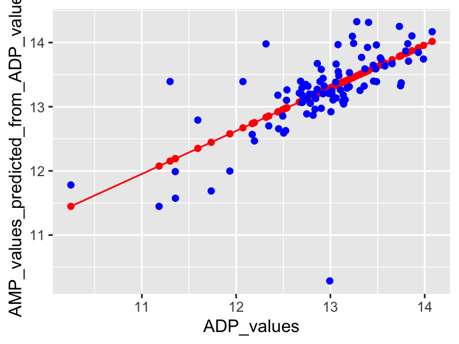

special topics
map data

plotting boundaries
There is a simple way to plot maps with ggplot. The map data comes with ggplot2! Let’s have a look. See below some of the data sets included. Options included with ggplot are: world, world2, usa, state (US), county (US), nz, italy, and france. geom_polygon() is useful for plotting these, at (at least to me) seems more intuitive than geom_map().
head(map_data("world"))
## long lat group order region subregion
## 1 -69.89912 12.45200 1 1 Aruba <NA>
## 2 -69.89571 12.42300 1 2 Aruba <NA>
## 3 -69.94219 12.43853 1 3 Aruba <NA>
## 4 -70.00415 12.50049 1 4 Aruba <NA>
## 5 -70.06612 12.54697 1 5 Aruba <NA>
## 6 -70.05088 12.59707 1 6 Aruba <NA>
head(map_data("state"))
## long lat group order region subregion
## 1 -87.46201 30.38968 1 1 alabama <NA>
## 2 -87.48493 30.37249 1 2 alabama <NA>
## 3 -87.52503 30.37249 1 3 alabama <NA>
## 4 -87.53076 30.33239 1 4 alabama <NA>
## 5 -87.57087 30.32665 1 5 alabama <NA>
## 6 -87.58806 30.32665 1 6 alabama <NA>
head(map_data("county"))
## long lat group order region subregion
## 1 -86.50517 32.34920 1 1 alabama autauga
## 2 -86.53382 32.35493 1 2 alabama autauga
## 3 -86.54527 32.36639 1 3 alabama autauga
## 4 -86.55673 32.37785 1 4 alabama autauga
## 5 -86.57966 32.38357 1 5 alabama autauga
## 6 -86.59111 32.37785 1 6 alabama autauga
head(map_data("france"))
## long lat group order region subregion
## 1 2.557093 51.09752 1 1 Nord <NA>
## 2 2.579995 51.00298 1 2 Nord <NA>
## 3 2.609101 50.98545 1 3 Nord <NA>
## 4 2.630782 50.95073 1 4 Nord <NA>
## 5 2.625894 50.94116 1 5 Nord <NA>
## 6 2.597699 50.91967 1 6 Nord <NA>Cool! We can see that lat, lon, group, order, region, and subregion are included. That makes plotting easy. Note that coord_map() can help preserve aspect ratios:
ggplot(map_data("world")) +
geom_point(aes(x = long, y = lat, color = group), size = 0.5) +
theme_void() +
coord_map()
Note that we can use coord_map() to do some pretty cool things!
ggplot(map_data("world")) +
geom_point(aes(x = long, y = lat, color = group), size = 0.5) +
theme_void() +
coord_map(projection = "albers", lat0 = 39, lat1 = 45)
We can use filtering to produce maps of specific regions.
ggplot() +
geom_polygon(
data = filter(map_data("county"), region == "minnesota"),
aes(x = long, y = lat, group = subregion, fill = subregion),
color = "black"
) +
theme_void() +
coord_map()
further reading
For more on plotting maps in R: datavizplyr
For more advanced map plotting: R Spatial